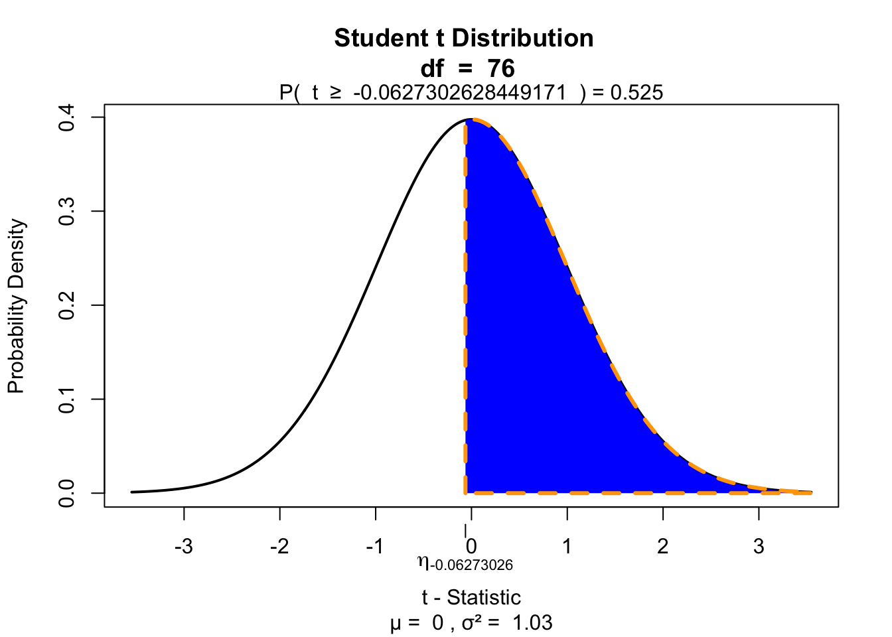

One-sample t-test
IQ next to you

http://goo.gl/T6Lo2s
Models
\[\text{outcome} = \text{model} + \text{error}\]
Compare sample mean
We use the one-sample t-test to compare the sample mean \(\bar{x}\) to the population mean \(\mu\).
Let’s take a different sample and calculate the mean of this sample.
mu = 120
n = length(IQ.next.to.you)
x = IQ.next.to.you
mean_x = mean(x, na.rm = TRUE)
sd_x = sd(x, na.rm = TRUE)
cbind(n, mean_x, sd_x) n mean_x sd_x
[1,] 77 119.9091 12.71673Does this mean, differ significantly from the population mean \(\mu = 120\)?
Hypothesis
Null hypothesis
- \(H_0: \bar{x} = \mu\)
Alternative hypothesis
- \(H_A: \bar{x} \neq \mu\)
- \(H_A: \bar{x} > \mu\)
- \(H_A: \bar{x} < \mu\)
Assumptions
- Normal samples distribution
- Measurement level
- Interval
- Ratio
T-statistic
\[T_{n-1} = \frac{\bar{x}-\mu}{SE_x} = \frac{\bar{x}-\mu}{s_x / \sqrt{n}} = \frac{119.91 - 120 }{12.72 / \sqrt{77}}\]
So the t-statistic represents the deviation of the sample mean \(\bar{x}\) from the population mean \(\mu\), considering the sample size.
t = (mean_x - mu) / (sd_x / sqrt(n)); t[1] -0.06273026Type I error
To determine if this t-value significantly differs from the population mean we have to specify a type I error that we are willing to make.
- Type I error / \(\alpha\) = .05
P-value one sided
Finally we have to calculate our p-value for which we need the degrees of freedom \(df = n - 1\) to determine the shape of the t-distribution.
df = n - 1; df[1] 76if(!"visualize" %in% installed.packages()) { install.packages("visualize") }
library("visualize")
visualize.t(t, df, section = "upper")
P-value two sided
visualize.t(c(-t, t), df, section = "tails")
Effect-size
\[r = \sqrt{\frac{t^2}{t^2 + \text{df}}}\]
r = sqrt(t^2/(t^2 + df))
r[1] 0.007195468